Why Ireland is not a British isle
Introduction and Summary
As with most stuff I write, this is long and tends to the chatty and slightly circuitous. A good editor could probably shorten it a lot.
Mainly, I cover two topics.
One is a turbo-tour of Irish history. That illustrates why calling Ireland a British isle is problematic.
The other, mixed into the history and then supplemented with a separate page of evidence, is a description of how and when various names were applied to the islands. That second page addresses the various excuses people use to keep calling Ireland a British isle and illustrates why they’re problematic, often downright daft, and almost always highly selective.
In terms of length, the evidence page is actually the longer of the two. It’s interesting, and can be read over a second beer or coffee.
So, relax, grab that first coffee or a beer and have a read. The evidence page, with its extensive references, is there when you want it. You can read it, or not bother.
Right….onwards.
While the term “British Isles” has long annoyed many Irish people when it’s applied to Ireland, at time of writing it seems particularly important to clarify that Ireland is not a British isle.
First, let’s pause….I know that quite a few people are already thinking something like this;
“Yes it is.
It always has been.
It’s a purely geographical term.”
For the busy among you, the TL:DR of this article is simply this:
No. It isn’t.
And no, it hasn’t.
And no, it’s not.
That’s what this article will explain. What you think you know….many of you….it’s wrong.
Second….why write now? Well, as I first write this it’s early August 2024 and there have been race riots all over Britain. Online, there’s a significant uptick in people (often from the US) talking about “the British Isles”. About how the rioting is meant to protect things like “the indigenous people of the British Isles” or “British culture and the people of the British Isles”. And they apparently mean to include Ireland…particularly the racists in Britain.
Since I regard people like Phil Lynott and Paul McGrath and Rhasidat Adeleke as proper Irish people, I have no time for this racist nonsense.
Hence, a sense of urgency in clarifying that Ireland is not a British isle. It wasn’t, for ages. Then it’s fair to say it kinda was, for a while. And now it isn’t any more.
And third, the simple fact below
Ireland is not a British isle. Ireland is not in the British Isles.
It is important to get one thing clear at the beginning. Applying the term “British” to Ireland is not a neutral geographical description. It’s not a purely geographical term.
Alluvial or volcanic are geographical terms that one could apply neutrally or purely to isles or islands. So are glaciated and green and windward and leeward. These are geographical terms one could apply to isles or islands.
Sandwich, or Spanish, or British or even “Philippine”….these are not geographical terms and they are most definitely not purely geographical terms to apply to islands.
Falklands or Malvinas? One of those terms comes from a Scottish title, Viscount Falkland (held by an English family). The other comes from a town in France, Saint-Malo. Which one of the terms you decide to apply to the well-known and contested islands is not influenced by anything geographical.
Calling somewhere a British isle? Or one of the British isles? That’s political. “British” is not a geographical term. Claiming that the term “British Isles” is a purely geographic term is nonsense on its face. It’s a ludicrous claim to the point of silliness. It takes spectacular brainwashing and/or doublethink to believe it. And yet lots of people clearly do.
The word “British” does not describe a type of geography. It describes a national affiliation to Britain or to the UK. British Embassy. British Broadcasting Corporation. British Army. British Steel. British Gas. British English. British Government. British Standards Institution. British Grand Prix. British cuisine. British music. British Museum. And so on and so on.
Similarly, anyone claiming that the terms “Belgian Congo” or “French Guiana” or “Dutch East Indies” were purely geographical would be seen as slightly mad.
One might claim with some validity that the idea of “British Isles” was ancient — more on that later — but to claim it is purely geographical, or geographical at all, is asinine.
There was even a proposal — at the time of the 1801 Act of Union — to make King George III the “Emperor of the British Isles”. He declined, reportedly preferring the traditional title of King. But if people are suggesting that you should be Emperor of something, it’s political.
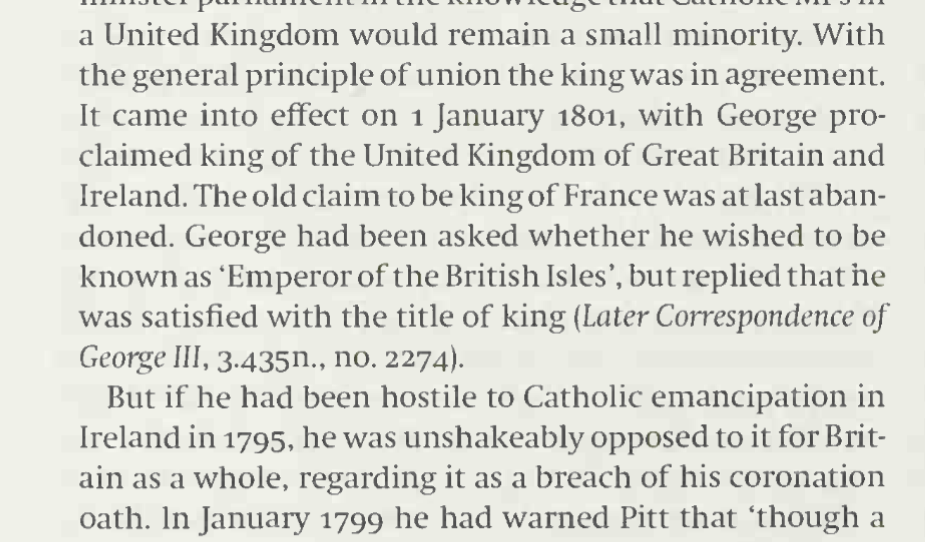
There’s also a frequently made and deeply ludicrous claim that “British Islands” is political but “British Isles” is geographical. Much more about that on the evidence page, but it is absolute nonsense. Isles and islands are the same thing. And "British Isles" and "British Islands" were synonyms from the time they first appeared in English. And yes, Wikipedia has this completely wrong but it’s a very well defended position by a long-standing group of editors. If you doubt me I’ll give you the references and you’re welcome to try to change the relevant pages.
Then, given Britain and Ireland’s history, and specifically how the British project in Ireland often involved awfulness in Ireland, it is also a heavily-loaded political term. Plus, no matter what your claim about the historical background of the term, more recent history gets a say too, and more recent history gets to overrule previous history when it comes to the name of things.
One might claim, for instance, that Ukraine is part of Greater Russia using a historical basis or try even to make an argument that Scandinavia was really the West Russian Peninsula (the Rus were originally from Sweden after all and there are echoes of that term in Sweden still, plus Ukraine was the home of the Kievan Rus and was often called Little Russia or said to be part of Greater Russia)…..but you might not be popular if you did. Recent history gets a say.
Both Britannica and the UN FAO do in fact list Ukraine as being part of the Russian Plain and the Russian Steppe, respectively. I confess I wouldn't dare. But the claim that "Russian" is geographical is made in the same way that the claim "British" is geographical. It's clearly not geographical.
Then, the very first edition of the OED actually mentions that the definition of "British" included the idea "the opposite of Irish". You can't just pretend that away, though people do try.
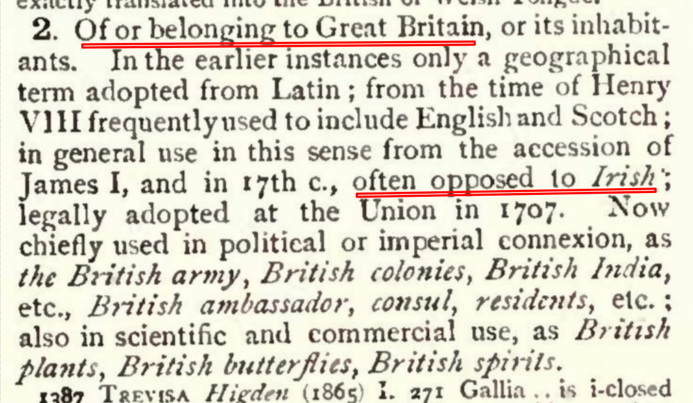
And as mentioned already above, there is nothing geographically Belgian about the Belgian Congo. And I hope no-one would try to claim that the term was geographical, let alone “purely geographical”.
Basically, calling Ireland a British isle is pretty rude these days. It is frankly disrespectful to Ireland and Irish people in general. Potentially innocent the first time, not the second time. A warm Irish welcome can get very frosty.
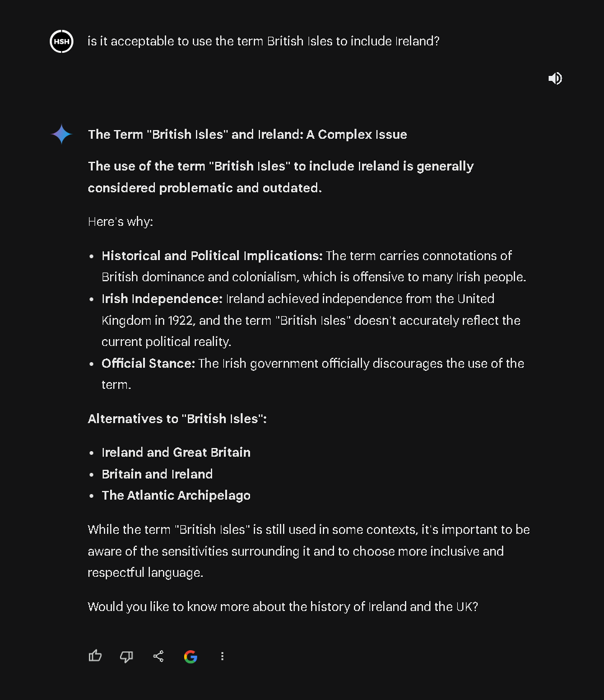
Now you might still be saying “But….but”.
One of the more graceful comments on the matter came in Norman Davies “The Isles — a History” (1999)
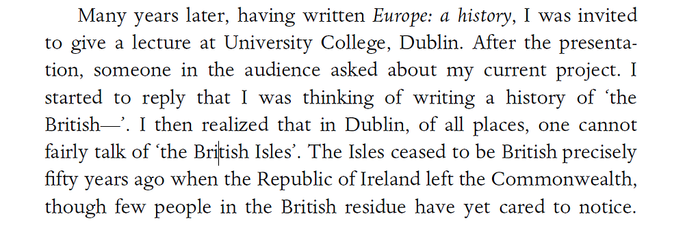
I have a few examples of less graceful but sadly very common responses on the evidence page. Insult, usually. Along with some remarks about being uneducated.
There is an all-too-widespread attitude among a certain type of British person in regard to the Irish. It’s not very internally intellectually consistent and it’s basically something like this.
You’re really British and you live in the British Isles and you’re the same as us, you stupid f*cking Paddy.
I have put a list of the common counter arguments on a separate page, with info to show that they’re nonsense. These are tried by politer but misguided people who still can’t get over the idea of Ireland not being in the British Isles. There are even occasionally Irish people who think that believing what they were taught in primary school makes them more sophisticated than Irish people who continued to learn about the actual history.
You can jump straight to it if you like, and there is a lot of information there, but maybe you should read the rest of the story first. It’s more fun that way. And you get a crash course in Irish history on the way.
Oh, I put in AI links as summary references in a few places. They're summaries. There are exact references on the evidence page, usually. And maybe you’ll take an AI’s word when it’s summarizing classical texts. No-one is adding corrections to interpretations of the classical texts into their AI. And there are a bunch of links to ancient and medieval writers in the “bad excuses” section on the evidence page. If you get through that section with all the ancient and medieval writers and still want more reading then off you go!
Right…So…One thing at a time.
1. The early history and how the term has not been in continuous use for thousands of years
Yes, I know you keep hearing that the term has been in continuous use for thousands of years. It’s not true. Let’s look at the history from the beginning.
Some Greek voyagers (a fair bit BC) went on voyages of exploration to the ends of the world. The main voyager mentioned was Pytheas of Massalia in the 4th Century BC. There were potentially earlier voyages, but they’re even less well sourced than Pytheas. The original writings of Pytheas don’t survive either, but we have echoes of him through later writers.
According to later writers, Pytheas named what they thought was to the northwest of the European mainland something like the “Pretanic Isles”.
(This seems to have become “Britannic” later, in Latin, though with a different meaning, and it’s not even completely certain that “Pretanic” and “Britannic” are based on the same original word).
The islands were cold and wet and at the end of the world, in varying degrees. However, there was tin on one of them. That had been hugely important in the Bronze age and still was. Bronze had not disappeared even if we were now in the Iron age so trade was worth it. Other than that the islands were inhabited by peoples who were comparative savages.
The origin of “Pretanic” is debated too. It could be various things. It’s most often said to be something about “painted people”, with extensive later records of various people on Britain dying themselves blue with a pigment from woad. It could be an ethnic term, possibly a tribal name.
If there is consensus, it's that "Pretanic" was probably a Gaulish term for the people in the south or south-east of what is now England. And that the people in the south or south-east of what is now England - and probably most of Britain - spoke a P-Celtic language closely related to Gaulish at the time. People in Ireland spoke the Goidelic/Q-Celtic variant at the time, probably.
However, there is general agreement that it referred to something relevant to the island then called Albion and later called Britain/Britannia (and then Great Britain MUCH later).
“Pretanic” is often claimed to have applied to Ireland too but it seems highly unlikely it had any real reference to Ireland. (Ériu, Ierne, Hivernia or Hibernia at various stages.) People like Norman Davies (in his “The Isles — A History” have pointed out that the word “Pretanic” could only have come from Britain and Britons or from the mainland of Europe because Gaels in Ireland wouldn’t have used that word. The whole P and Q Celtic thing. In any case, it makes the term an exonym in Ireland from the beginning.
An interesting observation from all this indicates that in discovering the name Pretanike´, Pytheas of Massilia can only have been talking to P-Celts and not to Q-Celts. He obviously took his information from a P-Celt source either in Albion, or perhaps on the Continental shore.
“Pretanic” didn’t have any connection to Ireland from the beginning.
The native name for Ireland was the ancestor of “Ériu”, something like *Īweriū in early Celtic, possibly meaning “plentiful land”. The Greeks heard it as “Ierne”, and that’s how it first appears in writing, centuries before the Irish wrote it down themselves. In other words, the Greeks knew Ireland by its own name from the start. “Pretanic” was a different name, for a different place.
But, at bottom, it is certainly likely that parts of Britain and/or certain peoples in Britain were called something like “Pretanic”. The term “Prydain” has been in Welsh for a long time. Sadly there’s no local evidence of any of this because neither Britain nor Ireland had writing back then.
And, as used by Pytheas “Pretanic” also included an island called Thule.
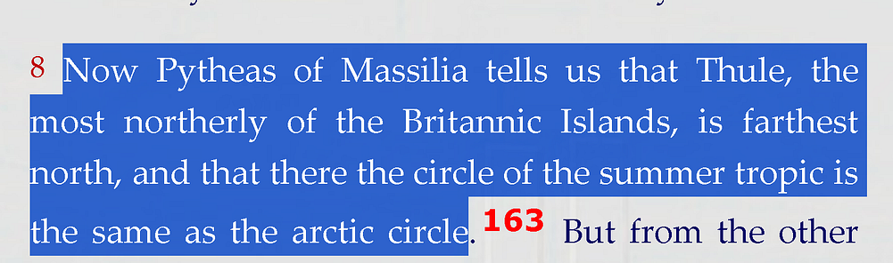
Now while later classical writers thought that Thule might be Shetland or the Faroes, the modern view is that Pytheas — the originator of the whole term — had gotten to Iceland.
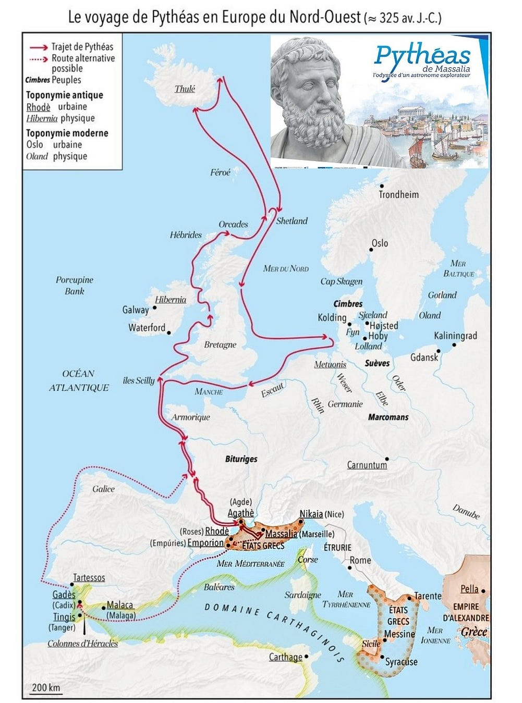
So, the original Britannic Island of Thule was most likely Iceland. Some still think Norway. But not the Shetlands or the Faroes. And the sources included many descriptions and details that Greek writers in the 1st century BC found unreliable and indeed incredible….but which make the identification of Iceland more certain nowadays. (See Broderick, 2022, 'Ultima Thule') And, of course, neither Iceland nor Norway nor the Faroes are in the British Isles.

It’s fair to say that the Greeks were interested in Cornish tin and not much else. They seem to have taken a word that meant something somewhere specific in Britain/Albion or that was used by someone in Gaul about some of the people in Britain/Albion and just extended it with a wave of the hand.
Neither they nor anyone else in the Mediterranean knew or cared much about Ireland. And there’s no evidence these first Greek visitors ever landed in Ireland at all.
Similarly, on the common interpretation of the word “Pretanic” being about body paint, there’s no evidence then or later that the people on Ireland at the time painted themselves. Nor do the classical writers describe any other Celtic-speaking people doing it. They do describe painting and tattooing among non-Celtic peoples: Thracians, Illyrians, Dacians, Sarmatians. But among the Celtic-speaking peoples, it’s only ever the Britons. There is no evidence that woad was native to Ireland or that prehistoric Irish people used it for body paint. Woad is now generally regarded as an introduced plant in Ireland. It was, however, cultivated and used for textile dyeing in early-medieval Ireland, as both Irish texts and archaeological finds attest (see Fergus Kelly, Early Irish Farming, 1997). So: no evidence of woad body paint in Ireland. No painted Irish, no “painted people”.
(Interestingly, it seems no-one knows how to do blue skin painting with woad any more. Or whether it was ever possible. Or, indeed, if it was definitely woad that was used.)
So, “the Pretanic Isles” was never an accurate term for Ireland in the first place. It was merely a handwaving extension of what was probably a Gaulish description of people in the south or south-east of England. And the handwaving extended as far as Iceland, or MAYBE the west of Norway.
Other ancient terms were often wildly expansive and vague in their application, with the Greeks often taking one encounter with people and applying a term to everyone that it could possibly apply to. They didn't have a clue.
“Barbarian” is a nice example. According to the Greeks, that was anyone not speaking Greek. Including the Persians, Egyptians, etc. But those people could not be seen as “barbarian” then or now in any real way. Similar with “Pretanic”.
And using an ancient Greek as a justification to call ancient or modern Egypt “barbaric” would be simply ludicrous. We see the mis-application of words in other contexts too. North American “Indians” are not Indians. They never were. It’s daft that people still call them that.
In any case, with Pytheas of Massalia as the unreliable source, the ancient Greeks weren’t really sure what they’d found other than tin and varyingly barbaric tribes.
While the evolution of Brythonic Celtic and Goidelic Celtic into mutually incomprehensible languages was potentially only underway for half a millennium when the Greeks were passing in the 4th Century BC (Brittonic became Welsh and Breton, Goidelic became the Gaelic languages Irish, Scots Gaelic and Manx), Britain and Ireland were already described by Greeks in the 1st Century BC as being quite different from each other (in unflattering terms for Ireland too).
They were increasingly speaking mutually incomprehensible languages; and they were evolving into quite different societies.
Even if they ever had been, by the 1st century BC the Gaels/Irish were certainly not being confused with Britons. And it was well understood that Ireland was not Pretanic/ Brythonic/ Britannic/British.
Even if someone said that Ireland was Pretanic/Britannic in the 4th Century BC, it had probably not been an accurate description in the first place….and it wasn’t an accurate description by the time the Romans got to Britain.
We’ll get to the Romans further down, but let’s get back to these Greeks. They can be seen describing Ireland alongside and separate from “British isles” already in the 1st Century BC.
We have writings from Strabo and Diodorus Siculus. These are Greeks in the 1st century BC, at or about the time of the initial Roman contacts with Britain (Julius Caesar’s mini invasion).
While you’ll often see claims that they talk about Britain and Ireland being the “British Isles” — or the equivalent in Greek — it’s not that simple, or at all certain. Siculus does use “the British Isles”, but for how far Caesar took Rome, and Caesar never went near Ireland. He never clearly mentions Ireland at all. Strabo talks about Britain. And talks about Ireland. He calls Pytheas unreliable, and when he describes the islands he gives “some small islands round about Britain” and then, separately, “a large island, Ierne”, whose inhabitants are “more savage than the Britons”. Not Britons. There’s detail on the evidence page.
A potentially important point about Siculus and Strabo is that they were exposed to the western and Roman world more than later Greek writers. Siculus was from Sicily and Strabo spent time in Rome. They had more chance to be directly exposed to actual Roman knowledge about Britain and maybe even Ireland. Greeks who spent their lives in the eastern Mediterranean world, not so much.
Anyway, while it’s commonly said that the ancient Greeks included Ireland in these “Pretanic Isles”, that’s not the slam-dunk you may have been told it is. Even if we accept that they did include Ireland in these “Pretanic isles”, they also included Iceland (Thule) so using the ancient Greeks as the source of a modern geographic definition is sketchy at best…for that reason at the very least.
Onwards.
After a first visit with Julius Caesar in the 1st Century BC, the Romans conquered most of Britain with Claudius in the 1st Century AD. There’s a lot more writing and a lot more detail once the Romans come around. And that’s increasingly true for Ireland too, even though the Romans did not conquer Ireland — or even try. They were probably not interested. Ireland was remoter and wetter and colder than the Roman province of Britain. Why would they bother?
Caesar talks about Britain and mentions Ireland. Separately. And that matters more than it might seem. According to the classicist Philip Freeman, Caesar gives “the first unequivocal reference to Ireland in the ancient literary sources”. So the very first time Ireland definitely appears in writing, it appears by its own name, Hibernia, as its own island, “smaller by one half… than Britain”, lying off to the west. No collective term. No British Isles. (more on the evidence page). Wikipedia won’t tell you this, of course.
After Caesar, no Latin writer calls Ireland British. There’s one translation, when Apuleius translates the Greek Peri Kosmou into Latin as the De Mundo, which we’ll come to on the evidence page. Pliny records the old collective name, but only as something things used to be called. Every one of them, Mela, Tacitus, Juvenal, Solinus, Orosius, calls it Hibernia, or a close variant, and treats it as a place of its own. The “Britannic” grouping survived only in the Greek geographical tradition, in writers like Ptolemy, who kept the old, fundamentally inaccurate label. And as we’ll see, that Greek view then vanished from Western Europe for a thousand years and more.
In any case, the Romans did not use a collective noun like British Isles or anything like it. They knew quite well that Hibernia was different to Britannia and that the inhabitants of Ireland were not Britons.
Pliny, who wrote in the 1st Century AD, is often quoted as proof that the Romans did use the term “British Isles”, but he was actually writing about how the Greeks used to call Britain Albion and how they used to call all the other islands “Britanniae” when Britain was called Albion, i.e. in the past. That’s the past in Pliny’s time.
He then went on to describe Britain and Ireland separately.
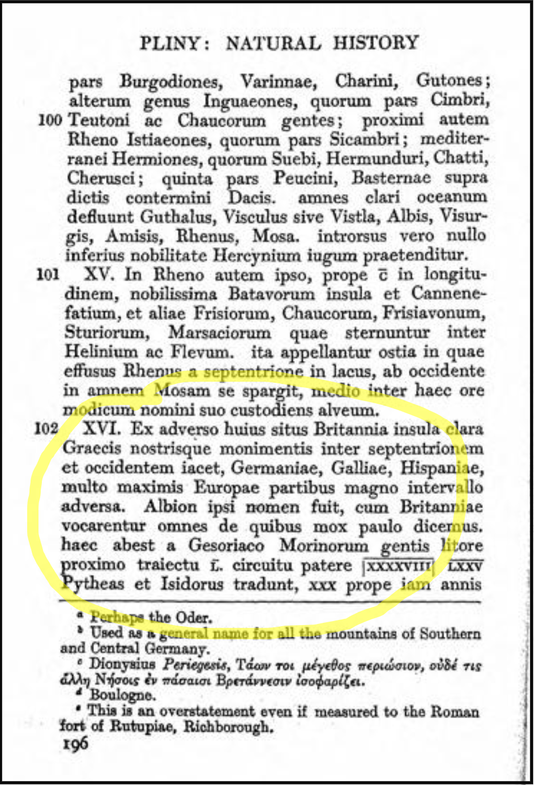
Here’s a translation/explanation of the Pliny section. Again, he’s basically saying “This is what the Greeks used to call things”.
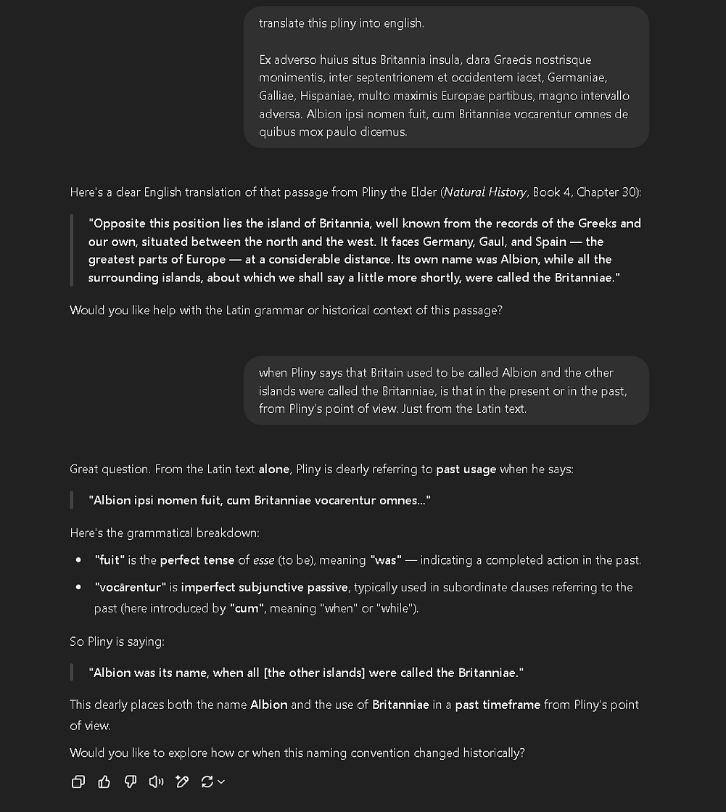
Pliny puts both names in the past: Albion “was” its name, back when all the islands were called the Britanniae. He’s reporting older usage, most likely from the Greek sources he cites in the very next sentence, Pytheas and Isidorus. Then he switches to the present tense to describe Britain, and Ireland, separately.
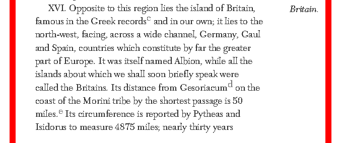
The text and translation match. Pliny was describing what things used to be called. He then switches to the present tense to describe Britain in detail.
Similarly, many people will also claim that Tacitus referring to “Britanniae” is him talking about the British Isles. It’s not. It’s Tacitus talking about the different parts of Britain, the Roman province. Have a look.
We’ll go through more sources on the evidence page, but you’ll see that the Romans called Britain Britain (not Albion any more) and they called Ireland variants of Hibernia. The Iberian peninsula was Hispania, France and Belgium (mostly) was Gallia, etc. Lots of things had names then that they don’t have any more.
And again, Britain and Ireland’s Celtic populations had been and were continuing to diverge into different linguistic and cultural places. They were visibly different cultures and places and the Romans knew it very well.
(plus, of course, the Celtic-ness of the populations is a matter of much debate beyond the fact that they spoke Celtic languages. That’s a separate discussion.)
But it’s clear that these supposed “Pretanic Isles” of the Greeks had morphed…with the “Britanniae” now being different parts of Britain. Things had changed….and that’s if you accept that it had ever been accurate to call Ireland Pretanic/Britannic in the first place.
Later Roman writers (e.g. Solinus in the 3rd century, or Orosius in the 5th century) also talk quite separately about Britain and Ireland. There is no collective noun for the islands.
You’ll often read people saying that the Romans did use a collective term. But when you go to look in the actual Roman texts, it’s not there (see the long “bad excuses” section on the evidence page).
There is also a fairly common myth that the Romans talked about Ireland being “Little Britain” (Britannia Parva). No. That’s just not so. There were much later translations of Ptolemy (again, we’ll mention him later) into Latin that did that — in the early modern period. But no Romans used that term at the time.
Ptolemy does have to be mentioned. He’s a player. Writing in Alexandria in Greek in the 2nd century AD, he did call Ireland a “British Isle” or at least a “Pretanic isle”. Ptolemy, writing in Greek and apparently spending his whole life in Alexandria, becomes particularly relevant later. But the Romans and the western world paid no attention to Ptolemy at the time because his geographical works were not available in the west until into the Renaissance (see Dalché).
Again, rather than trying to find references you’ll believe, just believe this.
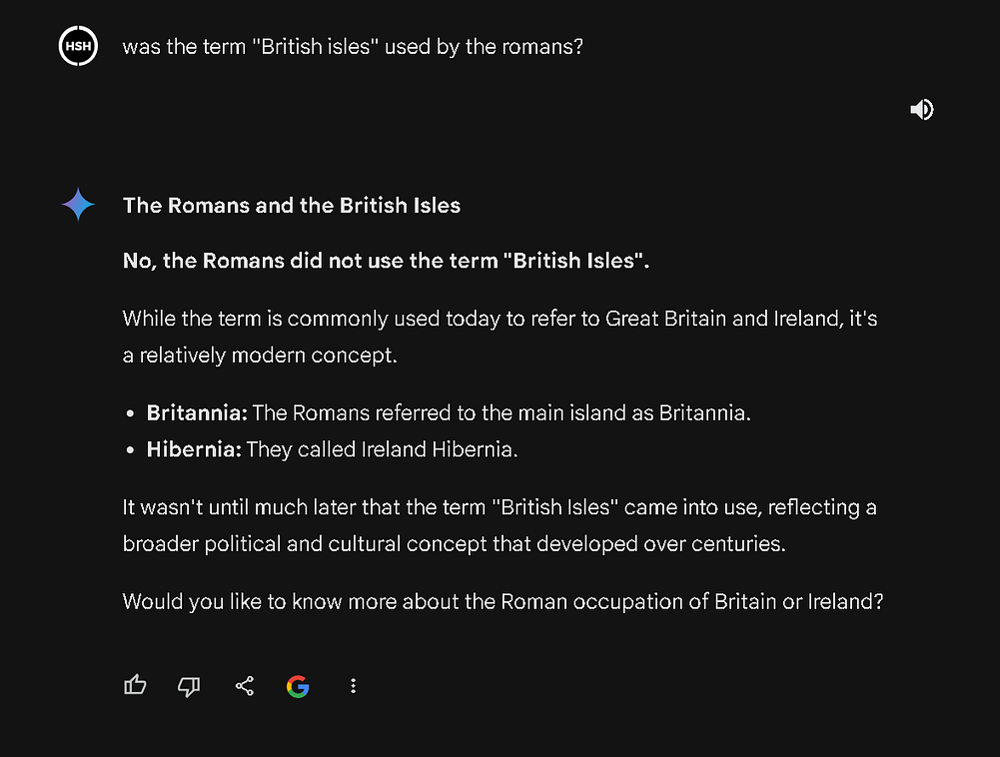
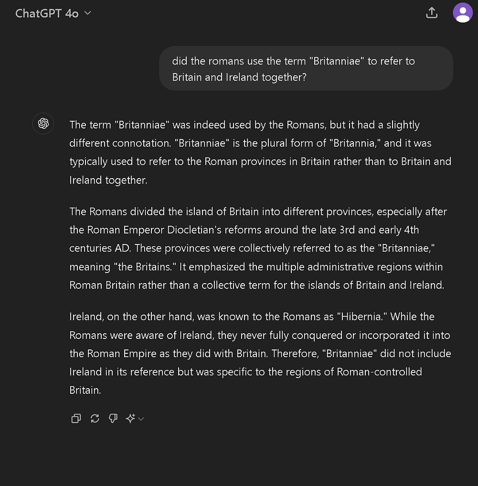
You can, if you wish, trawl through archive.org and let me know what you find. All the classical Roman and Greek writers are out of copyright.
So…After the Greeks, no collective term for the area was used for a long time. Certainly not in Europe. (again, see more in “bad excuses” on the evidence page)
But…back to the history.
The Roman presence in Britain faded out in the 5th century AD. St. Patrick had gone back to Ireland and brought Christianity and writing in the 5th century too, at about the time that the Angles and Saxons started moving to what became England. Ireland eventually became a haven of literacy in Northwestern Europe and someone later decided to call it “The island of Saints and Scholars”. Very nice.
But, between the Angles and Saxons and Romans coming and going, it all got very complicated for a while. The Vikings added to the chaos. The Scottii (from Ireland) invaded parts of what was not yet called Scotland and the Picts faded from history.
Centuries went by.
There was drama in Ireland with the Vikings and Brian Boru in 1014, and then somewhat later even more drama in England with the Normans and King Harold. 1066 and all that.
One key issue in the two islands was the Ireland failed to become a stable single state while Britain at least had a stable English Kingdom. That doesn't mean that Ireland wasn't a coherent unit, as you might sometimes hear. It certainly was. It just wasn't a single state in any kind of modern sense.
Normans came to Ireland in the late 1100s and there were various sorts of upset around their arrival. They came with distinctly superior military technology and lots of new ideas. After an initial surge, the power of the Normans in Ireland was pushed back a bit by the Gaelic lords, while the Normans (in both Britain and Ireland and indeed all over the place) also began to integrate as local lords.
The Normans eventually started speaking English in England and became “more Irish than the Irish themselves” in Ireland.
Cities and towns grew, the power of Norman lords or Gaelic lords fluctuated. Ireland was a divided land with loads of petty warfare.
Then the Black Death passed through, arriving in 1348. It’s highly likely that the Black Death was a big factor in reducing Norman and English power in Ireland, since the Gaelic Irish of the time didn’t live in towns as much. The Norman/English domination was slowed and often reversed. On top of this, English Kings were involved in trying to conquer France through most of this time. That’s where their focus lay. Ireland was a backwater.
Anyway….Centuries passed and all this time, Britain and Ireland were not called the British Isles.
Again, don’t believe me.
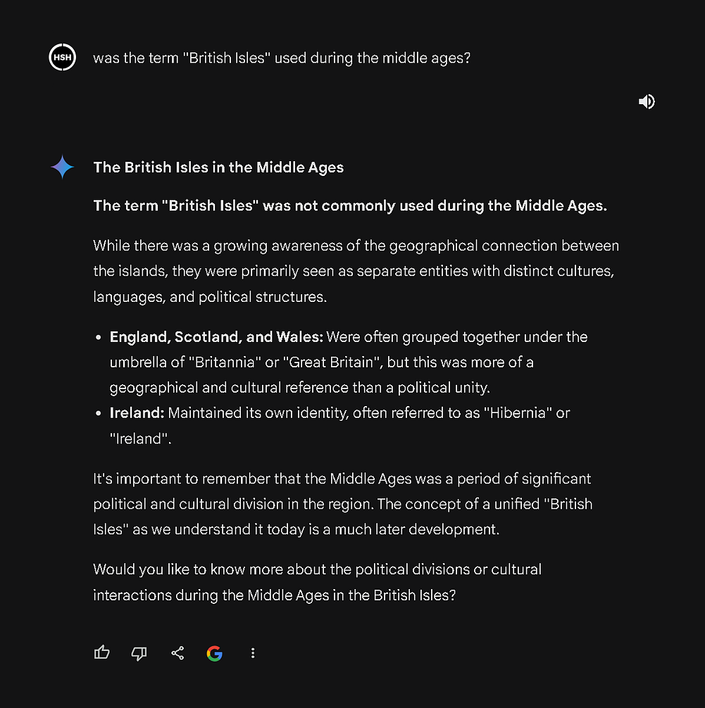
And, again, see more in “bad excuses” on the evidence page.
However, the middle ages eventually ended and the 1500s rolled around.
2. The Tudors did it
As the 1500s got started, Ireland was run by two main and by then only slightly competing forces….the old Gaelic Irish and the Norman-Irish.
Ireland was far from a single polity at the time. Imagine, perhaps, something like England before it was England, i.e. with Kingdoms like Wessex and all the rest of the petty kings and ever-changing alliances.
While the various Norman Lords in Ireland owed their allegiance to the King of England as their overlord (that’s a story in itself), and many of the old Irish Lords did, the ties were fading and Ireland was troublesome.
England itself had just been through the Wars of the Roses in the late 1400s and the whole period of the 1200s, 1300s and 1400s had seen loads of to-ing and fro-ing in Wales and Scotland. It takes whole books to describe it all. But by the 1400s English rule in Wales was secure and Scotland had secured its independence.
So, by the early 1500s, the Tudors (originally Welsh, remember, it’s relevant later) set about conquering Ireland properly.
It is important to remember that much of Ireland was not even vaguely under English rule when the Tudors set about their project. Even where there was nominal rule, control was dubious. Even long standing Hiberno-Norman (Norman-Irish, perhaps) families like the Fitzgeralds had rebelled. English control in Ireland was not solid and Ireland’s culture and language were massively different to that in England or Britain. It was, perhaps, a bit like Wales a few centuries earlier.
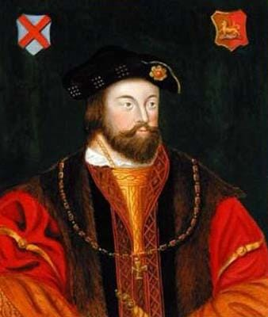
Beloved figures like Henry VIII were involved, even if that’s not him in the picture. Known for his tolerant and forgiving nature, Henry cracked down on rebellion and resistance in Ireland and succeeded in converting what had been the “Lordship of Ireland” to being “The Kingdom of Ireland” in 1542.
Control, though better, still wasn’t great. And now religion started to become an additional complicating factor. Henry did his whole Church of England thing and divorced his wife and England started to become Protestant. Ireland remained Catholic. This added a wholly new and wholly toxic layer to events.
Meantime the Spanish were trying to rule the world and they were trying to make everyone Catholic like them. Remember that they’d just recently kicked the last Moors out of Spain and had also been busy expelling or forcibly converting all the Spanish Jews. They were BIG into making everyone Catholic.
At the same time the Tudors were also trying to kick off the idea of Britain as a thing again. They were originally Welsh, so had a slightly different view of the world and by that stage the Kings of England had pretty much given up ideas of conquest on mainland Europe.
The effective English presence in France had ended in the mid 15th century, and while the idea of conquering France had lingered into the 16th century, even Calais was back in French hands by the mid-16th century. There was no prospect of establishing kingdom on the mainland and the English Kings had come to accept that they would not be a continental power. But the Tudors had ambition and so did England. If not France, then something, surely.
Scotland’s politics was very complicated and while Henry VIII was also interested in conquering Scotland, he only tried the “Rough Wooing” you might hear about. There was a mini-invasion after Henry’s death, but nothing sustained.
At this time in history people took religion very seriously and this whole religious fuss was making things increasingly tense and complicated. Unifying ideas felt needed and were also potentially powerful.
Plus, while the Portuguese and Spanish were busy carving up the world, the English were trying to force a way into this discussion too, and in global rivalries you have to go big or go home. If a role as a continental power on the mainland and in France wasn’t possible, then what? Then where? Blocked in that direction, England and the Tudors looked for other directions.
West and outward were the other directions. This was the context behind the Tudors becoming more focused on conquering Ireland properly. It didn’t always go well. Ireland was heavily wooded and England wasn’t the all-powerful British Empire yet.
But it’s now that we get to the origin of “The British Isles”. There was also “The British Empire” and “The British Ocean” (an attempt to claim the North Atlantic, essentially), though that last term never ended up in common use in that way.
Facing the ocean, ideas of taking over Iceland were considered and rejected. The fishing grounds off Canada were well known (Cabot and co) and worth a fortune. North East and North West passages to Asia were being sought. The first English colonies on American soil were getting going. But still, Ireland was the main focus of it all for now because it was close by and still not under control. But as you can see, lack of ambition was NOT a problem.
Lining up with that ambition, there was a concerted effort to create some unifying national myths. The Tudors were looking at Ireland and Scotland and were starting to put together reasons why they should be in charge of those countries as well as England. The justifications for wider rule had previously been posited based on myths of great ancient British Kings. Arthur had supposedly ruled Britain, Ireland and Iceland in the past and British Kings would be entitled to rule those lands again. Similarly, Brutus had supposedly named and then ruled all of Britain. (a Trojan Brutus, not a Roman one)
Such myths were actually fairly widely believed. But more propaganda would be handy. Among others, a propagandist named John Dee was coming up with marketing and was putting together more justifications for the Tudor and English rule of Britain and Ireland. The terms above are his. “The British Isles” in particular.
It appears first in English in a book in 1577. And here’s an important point to remember…English in a reasonably recognizable form had been around for hundreds of years by then. If it had been a term in constant use, it’d have appeared before then, right? Well, it wasn’t in use. And hadn’t been. But it was great propaganda, mind you.
It really was a great idea. We have to give him/them credit. It was an idea which could claim ancient origin (the Greeks, remember…they were very back in fashion at the time) even if it hadn’t been in use since then. It was an overarching identity that could claim to unite Scots, English, Welsh and Irish under the rule of one King. Or, at least as far as the English, Welsh and Irish were eventually concerned, one Queen.
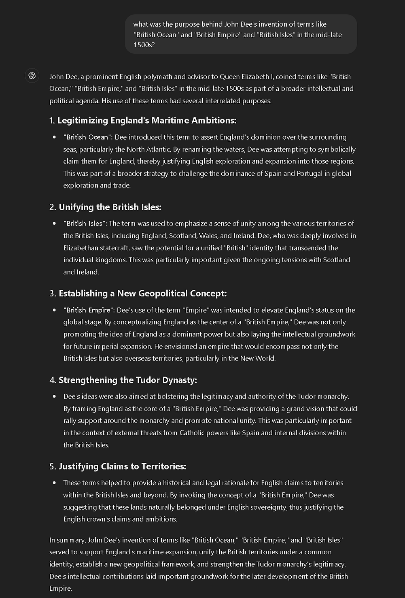
Here’s the first pages of the Introduction of the book “Charting Empire”, which describes the intermingling of geography, politics, propaganda and imperialism.
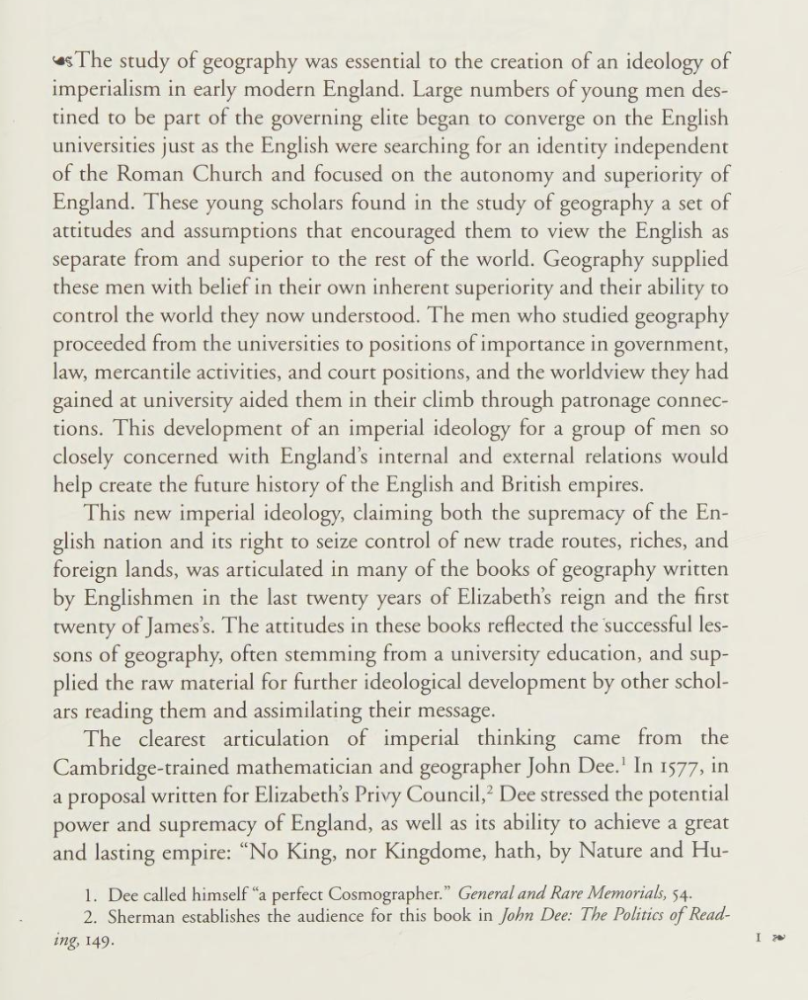
It’s worth having a read of the whole introduction. It’ll dispel any idea you might still have of the politics of it all….the politics of geography.
In any case, it was Elizabeth I by now. Henry VIII had died, and there had been another flurry of nastiness over religion. Several more heads were chopped off, and Elizabeth I of England ended up on the throne in 1558. A Queen for the key period rather than a King. But the same plan, more or less. And now also an actually Protestant Queen rather than merely a frustrated King looking to bypass Church rules so he could have an heir.
Anyway…back to Ireland.
The conquest of Ireland still wasn’t going that well for England and the Tudors, and now it was Elizabeth rather than Henry.
Several Irish lords had decided that they’d rather be in charge in Ireland on their own terms and not as sub-Kings under Tudor rule. It was a big bet with complicated origins. While England was clearly the wealthier country, the asymmetry wasn’t as huge then as it is now. Still, the Irish Lords (particularly in Ulster) knew they couldn’t win without outside help and started to work towards getting Spain to back them.
These Irish lords needed guns and money. Any kind of support they could get would help. They were busy using both the newly relevant religious angle to get support and also using the idea that Ireland could be a backdoor for Spain to use to invade England.
The backdoor idea appealed to the Spanish because they had long been interested in somehow allying with England. Failing that, maybe they could invade and take over. They weren’t sure so they tried both at various times. The alliance idea fell short because marriage with Mary ultimately failed and Elizabeth turned out not to be the marrying kind. Then invading through the front door hadn’t worked out too well. The Armada and all that.
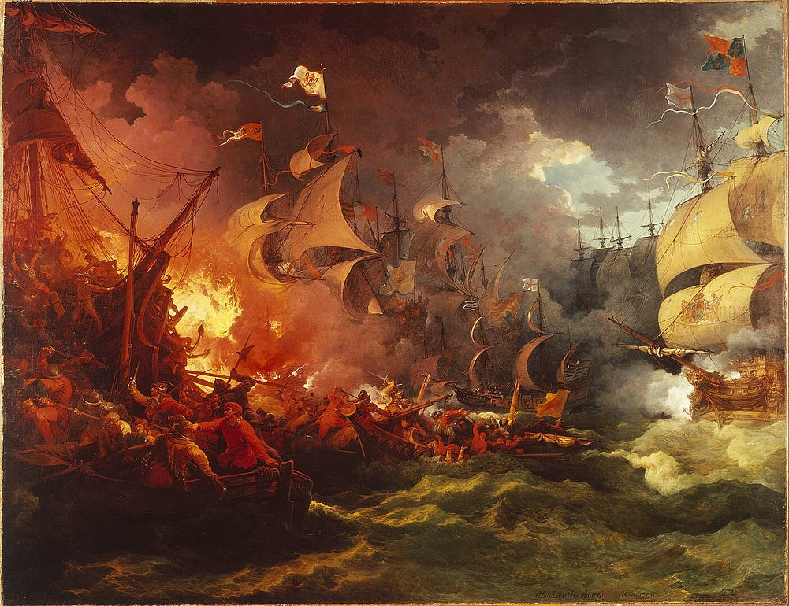
Ireland, thought the Spanish, might be a nice way around the back. And the Irish Lords were still fighting all this time. By the end of the 1500s much of Ireland was under Irish control. So the Spanish decided to get stuck in and help the Irish.
Then, to make a long story short, the Irish and Spanish made a monumental mess of it at the Battle of Kinsale in 1601 and that was essentially the end of that.
All of a sudden it was over.
The Irish were in disarray and the Spanish were losing interest in expensive misadventures.
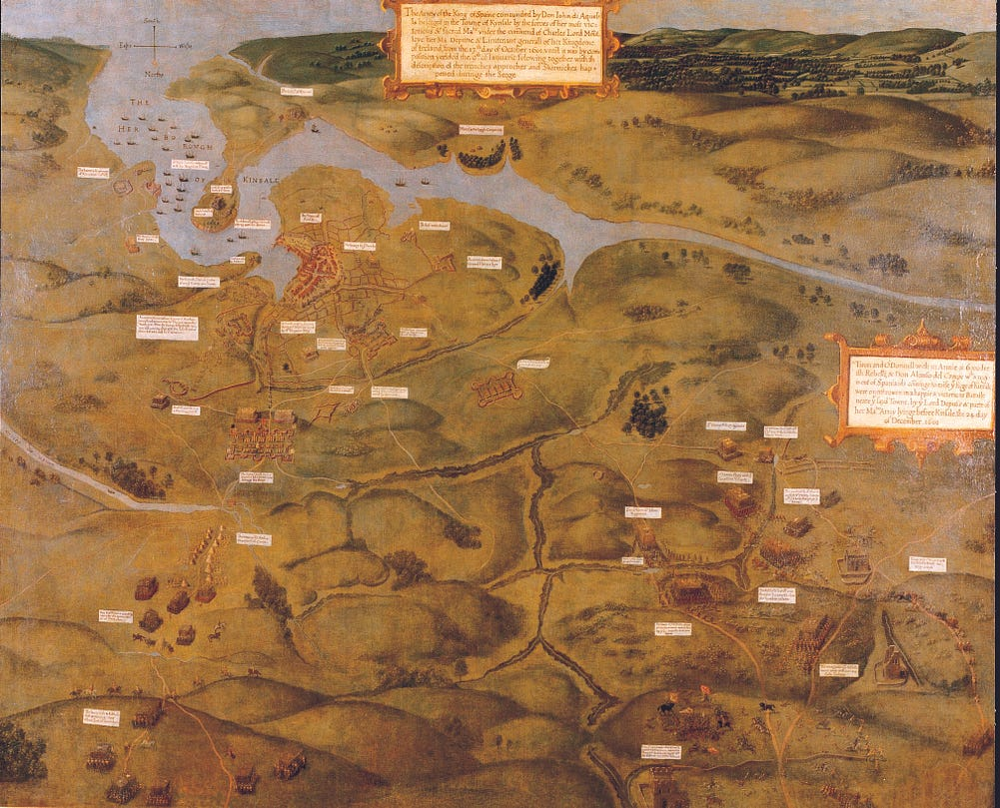
Tudor/English and now increasingly British/Stuart ambition however, had not wavered.
Control of Ireland was total within in a few years and the term “The British Isles” had stepped onto the stage. Gaelic and Norman Ireland was over, done, finished.
And again, this thing “The British Isles” was new. It was not ancient. It was new.
Furthermore, whatever about the term “British” being applied to Ireland by some ancient Greeks and then vanishing for a millennium-and-a-bit, the term “British” was now being applied to Ireland as part of the justification of a pretty serious conquest. And the term had never been locally used for anything except that other neighboring island of — well- Britain.
So, from an Irish point of view, it was very clear that the term was political. It was being applied in a conquest and alongside a territorial and cultural take over.
And the whole point of it from the British side was explicitly political too.
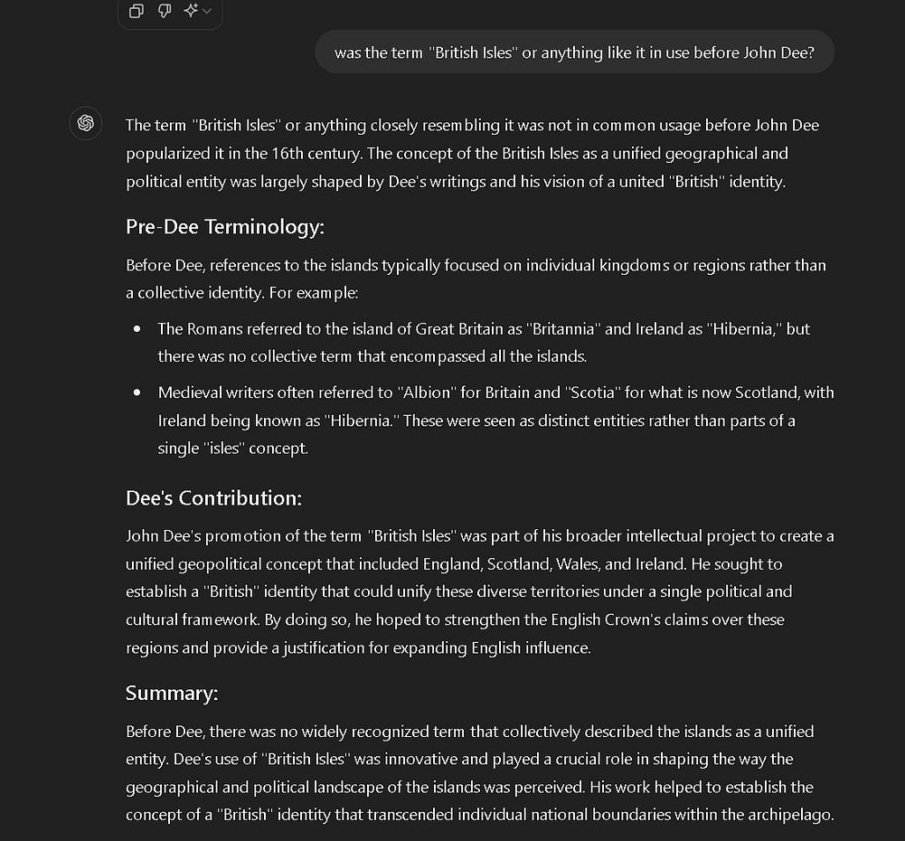
Here’s another summary of where and why the terms originated. And another. Again, one thing people complain about with AIs is that they read. Yes. They read.
Or there are people who write about the evolution of the term “British” and conclude things like this….
“In the 17th century, being British only had meaning as a colonial identity , when it was used to denote the projection of English and Scottish interests overseas.”
Guess where “overseas” included.
Or, also interestingly…
“Instead, in those records which still exist of material published in Great Britain and its dependencies up to 1800, the term British was mostly used in relation to Ireland in the first half of the 17th century.”
Or even “ British, by its very definition, is an imperial term, not a national one ”
Applying the term “British” to Ireland was not about geography though — again — the propaganda about “purely geographical” has been remarkably effective over the years. A nice summary here.
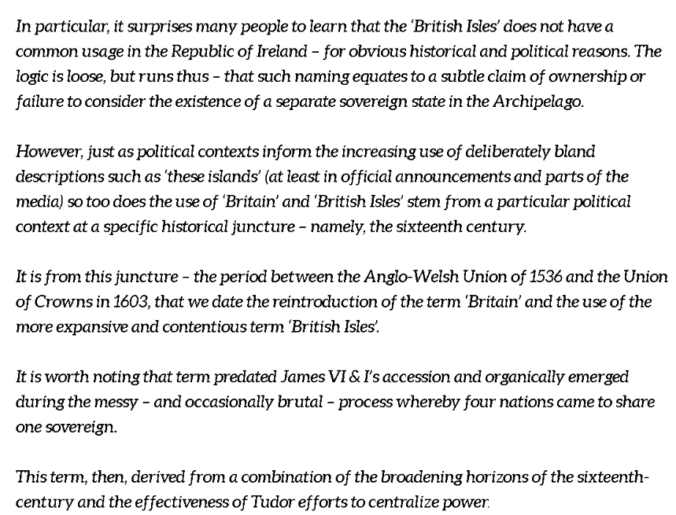
3. Irish as a subset of British
The following centuries were pretty grim for Ireland. Essentially, the Irish and the Catholic Irish in particular backed the wrong horse every single time over the next few hundred years. Every single time. Daft bastards, really.
First they backed the Stuarts over Cromwell.
Cromwell is often ranked among the greatest Englishmen ever. In the BBC’s 2002 poll of the 100 Greatest Britons, he came 10th. He’s generally despised in Ireland so you can imagine that being against him had not been a good choice. That was the mid-1600s.
Then they backed the Stuarts over William of Orange in the late 1600s.
That ended with events like the Battle of the Boyne and the Treaty of Limerick. They’re so complicated I’m not even going to start. But again, most of Ireland made a bad choice.
However, across all this time, the English and British project was to crush any trace of the old Irish culture and power structures and to make Ireland British.
In addition to that, most of the Irish were Catholics and the level of oppression is perhaps best described by Orwell.
Imagine a boot stamping on a human face — for ever
Irish nobility continued to flee to France and Spain (Hennessy cognac, for instance) and the oppression continued. The Penal Laws were introduced to keep the Catholics down and the Irish people descended in large part into a peasantry and poverty that is hard to even imagine today. Leaderless. Lost. Pretty much beat.
There were spasms in the late 1700s and early 1800s but they didn’t add up to much in the end.
However… these spasms did prove that the idea of Ireland ruling itself was still around. And they involved Irish people of all religions.
One interesting example turns up in the lead up to the 1798 rebellion. The main leader was a Dublin Protestant, Wolfe Tone. In 1791 he co-founded the United Irishmen in Belfast, together with a group of Belfast Presbyterians. It began as a campaign for parliamentary reform and Catholic emancipation, and within a few years it was pursuing an independent Irish republic, by military force if necessary. An organization co-founded by Belfast Presbyterians that ended up fighting for Irish independence. Those aren’t words we think of very often — at least in that kind of combination.
The French briefly invaded Ireland (look up “The Castlebar Races” for some amusement) but they didn’t last long either.
Then the last trace of Irish political independence — which was only nominal anyway — was eliminated with the Acts of Union that came into force in 1801 and The United Kingdom of Great Britain and Ireland was created.
Ireland was British.
Irish culture was repressed if not entirely crushed. Ireland was, indeed, arguably a British Isle. Irish had essentially become a subset of British.
But still not quite . Even at that moment it was “The United Kingdom of Great Britain and Ireland”. Ireland still got a mention. Perhaps no more than a fig-leaf to cover the rape, but still something. I have read commentary about how it might have just been called “The Kingdom of the British Isles”, but that the odd constitutional positions of the Isle of Man and the Channel Islands militated against that. I’ll see if I can find a source. There were, as mentioned above, discussions about making King George the “Emperor of the British Isles”.
But, bottom line, during the 1600s and 1700s and into the 1800s, the term “The British Isles” was indeed in common use and essentially accurate use.
4. But then…the Famine… and onwards to independence
If anything, the 1800s were possibly worse in Ireland than the 1600s or the 1700s. Hard to foresee, but ultimately true.
While political changes in Britain meant that oppression of Catholics was easing across the UK, there was no flexibility when it came to British control in Ireland. The sentiment that was behind the risings in 1798 and 1803 was taken up using peaceful means by one of the greatest men in Irish history. Daniel O’Connell. He’s worth looking up separately. The Great Liberator. Flawed, but a great man.
He ran a massive and popular campaign to reverse the 1801 Act of Union across the 1830s and into the 1840s. It was a big deal in Ireland. However, his peaceful attempts at reversing the Act of Union were fatally damaged when a planned “Monster Meeting” was threatened with violent repression by the government and the campaign fell apart. O’Connell was stumped. If peaceful means could be violently repressed by the government…O’Connell didn’t have another tool in his bag. Above all, he wanted to avoid violence. The UK government had no such qualms. O’Connell and his movement fell apart in confusion. There seems to be pretty strong consensus that, at the time, the UK government would have had no problem with violently putting down O’Connell’s meetings. Peaceful methods do depend on the government not being prepared to just kill people.
Then the Famine came.
The Famine is a grim story. It wasn’t a deliberate act, but the UK government did damn near as little as it could get away with doing. While the same kind of harvest failures meant people went hungry in Britain and across Europe, about one million Irish people died and perhaps two million fled to avoid starvation. Awful awful awful. And all this in the richest country in the world at the time. The United Kingdom of Great Britain and IRELAND. United. Supposedly. And Ireland exported food through the whole thing.
To illustrate the non-united nature of the UK, the Great Exhibition took place in London just a couple of years later in 1851. That was complete with actual crystal palaces, and is often regarded as the peak moment of British Imperial prestige. Ireland, meantime, was still a disaster zone.
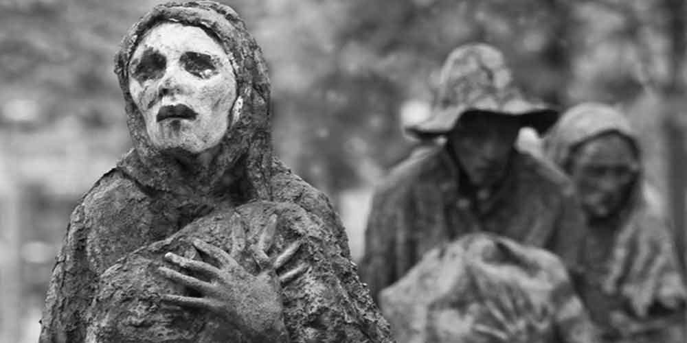
It should, surely, have been the end of the end of the end of any idea of Ireland. But it wasn’t. For whatever reason, it wasn’t.
In the decades afterwards, the idea of Ireland revived again. Even during the Famine itself there had been a failed rising, by the Young Irelanders in 1848. Then came another failed rising, by the Fenians in 1867. There were land wars. There was the Irish cultural revival. There was a renewed peaceful and constitutional campaign for Home Rule for Ireland.
Somehow the idea of Ireland as Ireland persisted. The idea of Ireland as a thing of its own persisted. I have no idea why, but it did.
All the while, British representations of the Irish could hardly have been more negative.
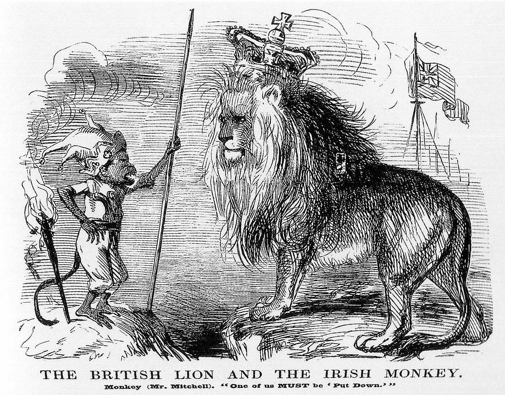
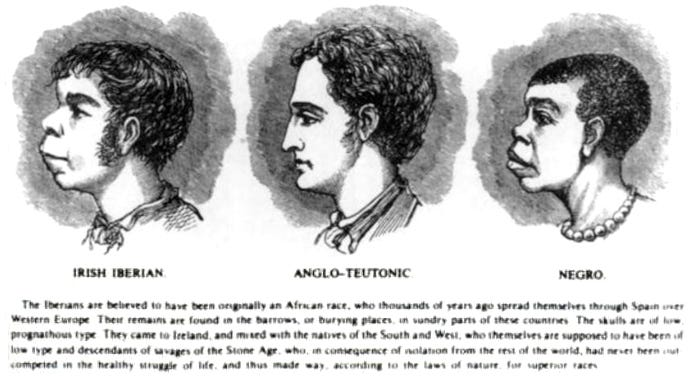
That revival and the revived desire for self-rule was repeatedly frustrated in parliament in London, particularly by the House of Lords. There was increased agitation and concern by Irish protestants about Home Rule. It’s all a sad and complicated story and one which dominated British politics for decades.
Still, Ireland and Irishness revived. Irish sports revived. Irish literature exploded. The idea of Ireland itself revived. There was continued democratic push for Home Rule, despite repeated failures.
Then we got into the early 1900s and, unhappily, instead of Home Rule and a transition to peaceful democratic autonomy within the UK or within the British Empire and with or without an eventual transition to being a Republic….. the world instead got WWI and Ireland got the Easter Rising, the War of Independence, independence itself, and the apparently compulsory post-independence Civil War. None of it was pleasant. None of it should have been necessary. Lots of people died.
Many (most?) British people are almost entirely unaware of any of this, despite the fact that it was their country, supposedly. Ask them about the Curragh Mutiny or who brought the first guns from Germany into Ireland and they’ll know nothing about the mutiny and will get the answer wrong about German guns.
In any case, instead of some tedious democratic process, the United Kingdom of Great Britain and Ireland ended in flames and death.
5. A new start?
But Ireland began again.
And the UK continued as the United Kingdom of Great Britain….and Northern Ireland.
The new Irish state started first as the “Free State”, within the British Empire. Then as the Republic of Ireland. But it was operating as Ireland, either way. Initially in a limited way but with autonomy increasing gradually — both politically and economically.
Even Northern Ireland operated as its own very Irish thing. No-one in Britain cared that Northern Ireland ran as a rather unpleasant little sectarian statelet. Northern Ireland was pretty purely Irish, in its own nasty way.
And without a significant Protestant population in the Free State/Republic, Ireland spent a few decades trying to become a rather repressive Catholic-dominated economic backwater.
The 1920s saw Ireland struggling to operate as a country. The left overs of a civil war and it was still a poor country. The 30s weren’t great either, especially with an economic war on top of that. Or a skirmish at least, with Britain.
Then what was called WW2 in the rest of the world was called “The Emergency” in Ireland. Ireland stayed nominally neutral but was helping the allies as much as it could. (this is true despite some of the nastier stories you might hear)
The 50s saw mass emigration to the UK…but in the 60s Ireland stopped trying autarky and started to look at the rest of the world for markets. Things started to look slightly rosier. And the population started to recover for the first time since 1845. Yep. Let’s call that 120 years of population decline.
Sadly, then the Troubles started, which REALLY didn’t help. Monstrous behavior all around from various terrorist groups and often badly-behaved security forces. And cack-handed politicians mostly doing the wrong thing again and again.
But these bad times too, they passed.
It’s hard to place when but — having had a limping start in the 1960s before the Troubles — at some stage in the early 1990s the idea of Ireland as just a normal country got into people’s heads.
Ireland shook off the chip on its shoulder. Irishness didn’t have to include “and it’s not British/English”. There had always been Irishness but now it was more confident and relaxed. Whether coincidental or not — and indeed no matter which direction the causality went — the gradual and then final end of the Troubles in Northern Ireland mattered a lot too.
Ireland was reborn. And now really not as a subset of Britain and Britishness, but as its own thing. This hadn’t happened for a LONG time.
(we can talk about Ireland and the EEC/EU another day)
6. Might Ireland have stayed British?
Here’s a thought. A bit of a diversion, but bear with me. Or skip ahead to section 7. Up to you.
The United Kingdom failed as a political project because instead of incorporating and accommodating Irishness, it tried to crush Irishness and failed.
The UK still exists in a small way with Northern Ireland but it’s essentially back to being The Kingdom of Great Britain. Not the UK, not really. It’s Great Britain plus “Oh yeah. Northern Ireland. Yeah. I forgot about them.” It’s more 1707 than 1801.
I can only imagine how disrespected Northern Ireland Unionists feel by the attitude of many people in Britain to their part of the UK.
The UK’s Olympic team has “Great Britain” on their shirts. The America’s Cup team is “Ineos Britannia”, and many others are “Team GB”. The ISO country codes for the UK are GB and GBR. Northern Ireland is apparently an irrelevance. It seems Northern Ireland is a pain in the neck for Great Britain and not much more, really. The lip-service-and-nothing-more paid to Northern Ireland unionists during the Brexit debates was illustrative.
But the union might have thrived. A union of Britain and Ireland makes sense in a lot of ways. Two islands off northwest Europe, facing the ocean? Fertile land? It could make sense.
But it failed because it wasn’t really a union. It was a takeover. It was a conquest.
And the conquest was persistently and repeatedly resisted. Resisted in many ways beyond all logic and sense, but people are funny like that. Possibly Irish people in particular. Something in the water.
Perhaps the main reason for failure was BECAUSE it tried too hard to make Irish a subordinate subset of British.
It failed because instead of making John Dee’s original propaganda idea of “The British Isles” a union of equals or at least partners, it tried to make the British Isles in a manner more akin to that described well by an ancient Briton…”They make a desert and call it peace”.
Perhaps that failure to incorporate instead of dominate was because the English and British governments at various times were — like most of their contemporaries — religious to the extreme. If the whole Catholic/Protestant/British/Irish thing hadn’t all been mixed in together could it have worked? Maybe. If London had thought “Hold on…this religion thing is causing too much grief. We should go easy on that”, could Britishness and Irishness have merged over time. It’s a moot point now.
But in the end the UK failed because it allowed the famine. It failed because instead of welcoming Home Rule and the prospect of peaceful alliance and democratic change, it persistently refused to allow any change in Ireland and it persistently drove up tensions in Ireland until we had the UVF in the north and the Volunteers in the rest of the country.
It failed because it executed the leaders of 1916, alienating a population that had until then opposed the leaders of 1916. It failed because it underestimated the Irish led by Collins and de Valera and the rest.
It failed because instead of absorbing Ireland happily into a new union, it kept trying to completely crush Irishness and in failing to crush Irishness completely it failed in its own primary purpose. It failed because it could not understand that, somehow, people in Ireland refused to consider Irish as a subset of British.
It failed because it set Britishness against Irishness. Not always and not completely, perhaps. But far too much.
The United Kingdom of Great Britain and Ireland didn’t have to fail, but in the end it did fail.
It’s plain to see that most Irish people nowadays think that an independent Ireland is a better idea, but it’s still possible to see how a United Kingdom of Great Britain and Ireland could have been cool. But it wasn’t. It really wasn’t. Not for Ireland.
There were other paths that could have been taken, many times. But they weren’t taken. So now Ireland is no longer in the UK, bar a handful of counties in the Northeast.
And in the last several decades Ireland has moved away from being economically and culturally dependent on Britain to being its own thing.
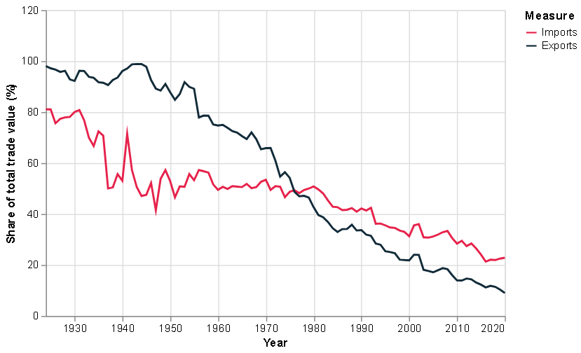
For sure, Ireland is a subset of Europe and a subset of the world, but it’s no longer a subset of Britain or of Britishness. Those trade numbers are downright amazing for a country like Ireland and its richer much larger nearest neighbor.
Ireland is no longer British.
Anyway! Back to the main story.
7. Ireland is not a British Isle because…
All the above is historically interesting but the argument could be made that it’s also entirely irrelevant. Even if Ireland had been a happy British isle for centuries, things change.
Today, Ireland is not a British isle. The term “The British Isles” can’t be separated from its political nature and political implications.
It is as ludicrous as claiming that Ukraine is still “Little Russia” or that Ukraine is still on “the Russian Steppe”. No-one could deny the close geographical and historical ties between the two countries or the historical connection of “Rus” to Ukraine. But more recent politics matters.
And in Ireland and Britain’s case, we know that the term was a political term from the beginning. And it’s perhaps even more especially important since the political project of Britishness essentially included the attempted elimination of Irishness. Perhaps quite like Ukraine and Russia.
Names change too, no matter how they started. History is complicated and the results of history change what we call the geographical features around us. The islands haven’t moved in relation to each other, but the relationships between the islands have shifted all over. And the names of things reflect the relationships between them and to the rest of the world.
Today, Ukraine is not part of the Russian Empire. It was for a long time. At one time the Russian steppe stretched from Hungary to China. The steppe is still there, but Ukraine is not on the Russian steppe any more. It’s the Eurasian Steppe now, unless you’re talking specifically about the part of the steppe that’s actually in Russia. Things change.
The North Sea used to be called the Germanic Ocean. Ceylon is Sri Lanka. Burma is Myanmar. Bombay is Mumbai. Breslau is Wroclaw. Maui is not in the Sandwich Islands. The Masurian Lakes are not in East Prussia. And so on.
Things change.
New Zealand may someday change its name to Aotearoa, which is the original name in Maori. And if it did, you couldn’t reasonably stand in Australia and go “But we’re used to calling it New Zealand so we’re going to keep calling it New Zealand and screw anyone in New Zealand who doesn’t like it.”
(And hopefully nobody would try to claim that the term ‘New Zealand’ was a purely geographical description. Calling something a river or a mountain — that’s purely geographical. The name of the river or mountain? That’s political.)
Things change. Ireland is no longer a subset of Britain and its relationships with the rest of the world are no longer dominated by being part of something British.
So even if the name “Pretanic” had actually accurately applied to both Britain and Ireland (it probably didn’t); even if the Romans had kept calling Britain Albion and all the islands in the area the Britanniae (they didn’t); even if the world had called the islands the Britanniae or Insulae Britanniae through the middle ages (it didn’t); even if the Tudors and subsequent English and British rulers had behaved less brutally (they didn’t); even if Ireland hadn’t become independent until 1992 instead of 1922…..it doesn’t matter. Things change.
Ireland is not a British isle. Even if it was, it’s not any more. Things change.
Various atlases and organizations used to draw maps or write books with the term. Now lots (not all) use the term “Britain and Ireland” instead. Things change.
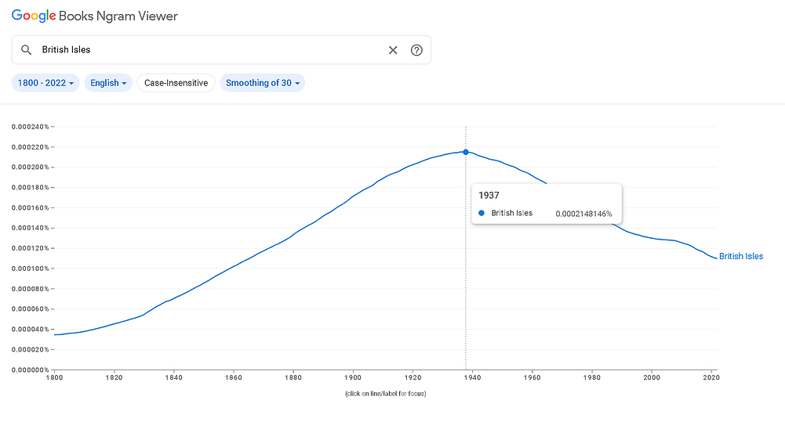
So, even apart from the Faragist loons, remember this.
Ireland is not a British isle.
So please don’t call Ireland part of the British Isles.
If you like the phrase “The British Isles” then have the courtesy to add “and Ireland”. Or keep it simple and go for “Britain and Ireland” or “Ireland and Britain”.
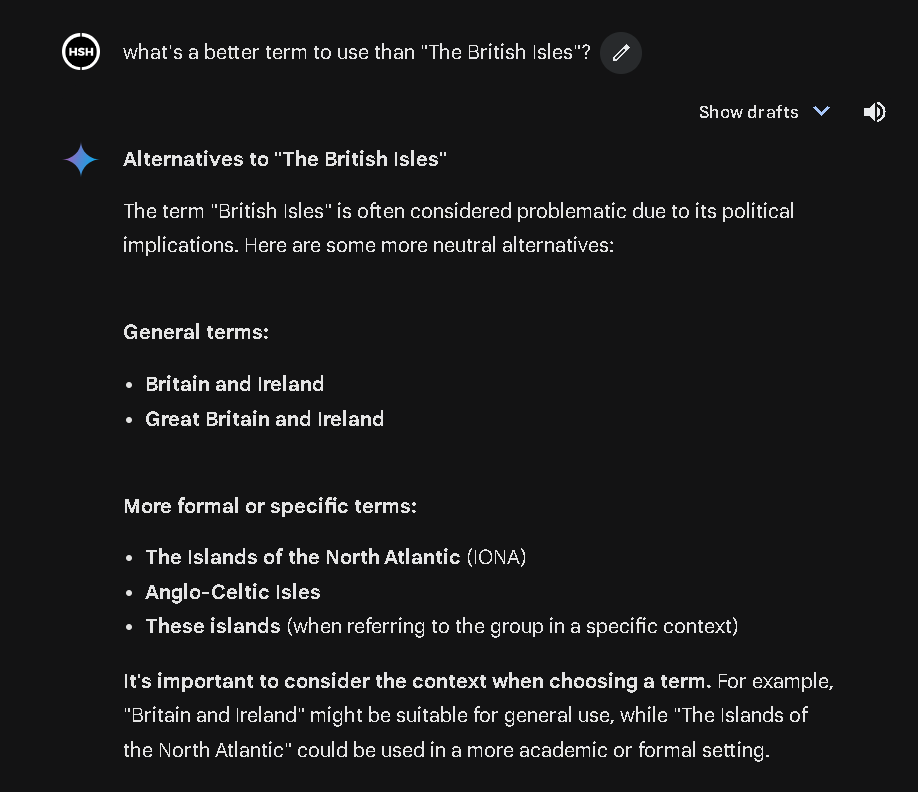
And if, like many people, you keep insisting that it’s a neutral geographical term, you’re just wrong. The names of things are political. Always. Particularly in this case.
Or maybe you understand that it is a political term but you’re this guy, happily and self confidently ignorant that things have changed.
Either way, please stop. It’s not nice. Don’t do it.
Thank you.
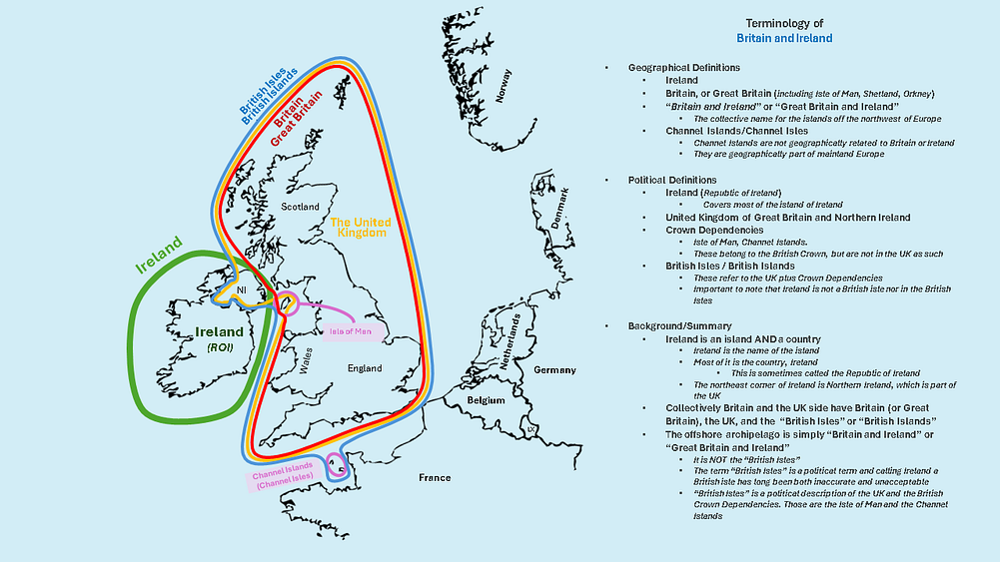